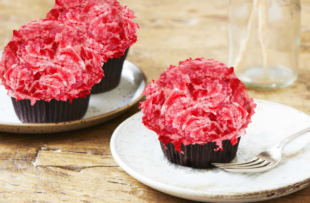

Tuotteet
Kahvitaukoa viettäessä asiakkaamme voivat nauttia laajasta kahvi- ja leivosvalikoimastamme.

Esimerkkinä juomista Sp00ky kahvilan oma ikoninen kahvi: BOOster.

Leivonnaisemme saavat sinut varmasti kananlihalle - kokeile marmelaadilla kuorutettuja aivokakkujamme!